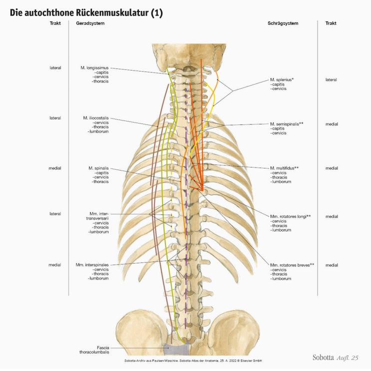
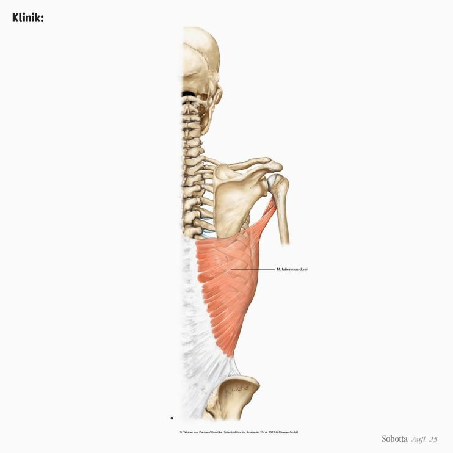
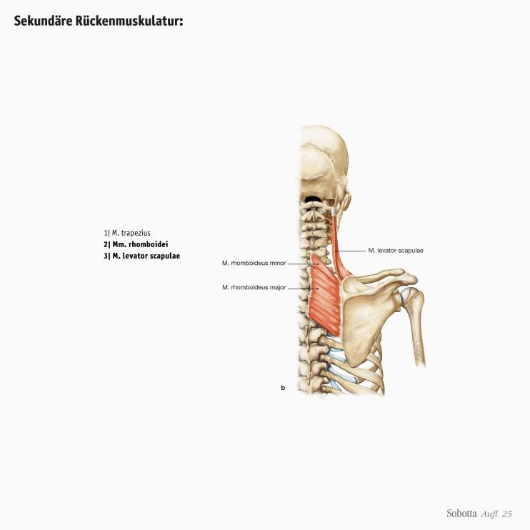
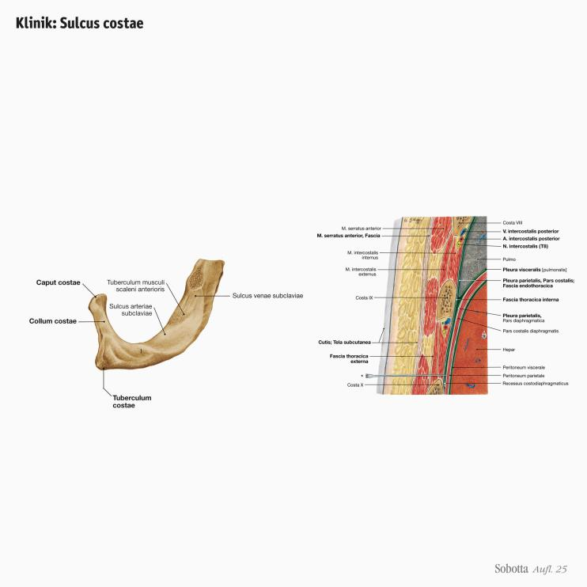
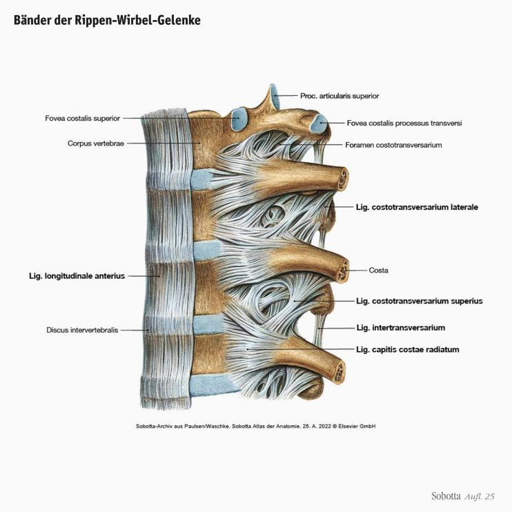
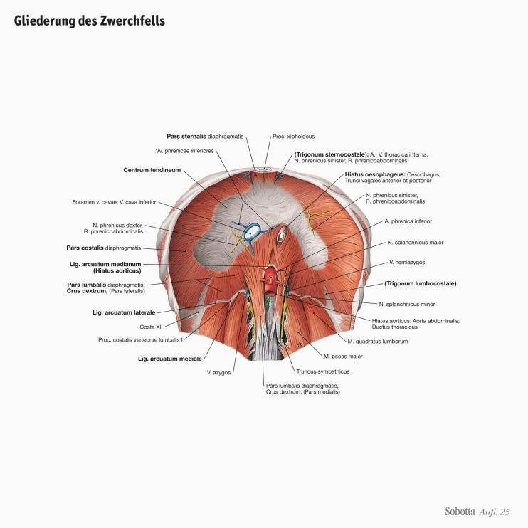
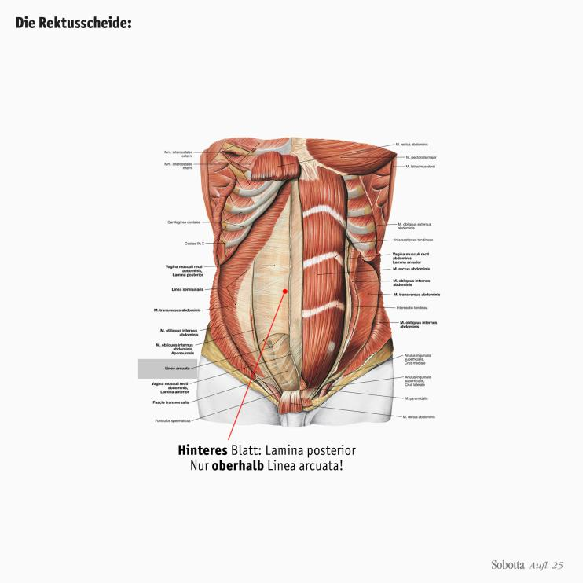
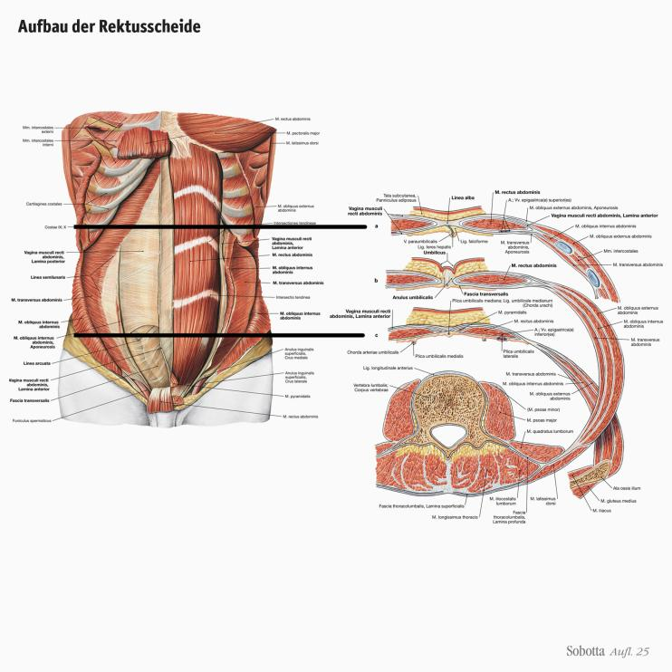

Zur Startseite
Zur Navigation springen
Zum Inhalt springen
Login / Lernen
Registrieren
Shop
Warenkorb
Über quowadis
Über das quowadis-Team
Häufig Gefragt (FAQ)
Impressum
quowadis-blog
AGB und Nutzungsbedingungen
Datenschutz
quowadis Krimi
Die Anatomie der Sache
EuerFeedback
Bodybit
Start
Muskeltabellen
Klinikbezug
IMPP-relevant
Body Bits
Glanzlichter
Lernatlas
Kapitel 1
Kapitel 2
Rumpf (1)
Rumpfskelett (28)
Primäre Rückenmuskulatur (14)
Kopfgelenke (8)
Nackenmuskulatur (4)
Sekundäre Rückenmuskulatur (7)
Brustkorb (12)
Thoraxmuskulatur (8)
Halsmuskulatur (8)
Bauchmuskulatur (14)
Rumpf (2)
Obere Extremität (1)
Obere Extremität (2)
Untere Extremität (1)
Untere Extremität (2)
Kapitel 3
Kapitel 4
Kapitel 5
Leitungsbahnen
Organsteckbriefe
Prüfung
Lernempfehlungen
gefundene Suchergebnisse
schliessen
Kapitel 2 >
Rumpf (1)
Rumpfskelett
Gliederung des Rumpfes
Das Rumpfskelett
Wichtige Orientierungsmarken des Rumpfskeletts
Klinik:
Lumbalpunktion LWK III-IV
Form der Wirbelsäule von lateral
Form der Wirbelsäule von ventral und dorsal
Form der Wirbelsäule beim Neugeborenen
Entwicklung der Wirbelsäule
Entwicklung des Bewegungsapparats
Entwicklung der Wirbel und Bandscheiben
Verknöcherung der Wirbel
Bildung der Rippenanlagen
Bau der Brustwirbel
Bau der Halswirbel
Bau der Lendenwirbel
Verbindungen der Wirbel
Bau der Disci intervertebrales
Fixierung der Disci intervertebrales
Funktion der Disci intervertebrales
Klinik:
Bandscheibenvorfall (Diskusprolaps)
Wirbelbogengelenke:
Articulationes zygapophysiales
Gelenkflächen der Articulationes zygapophysiales
Bänder zwischen den Wirbeln (1)
Bänder zwischen den Wirbeln (2)
Bänder zwischen den Wirbeln (3)
Funktionen der Bänder
Beweglichkeit der Wirbelsäule
Klinik:
Messung der Beugung der BWS und LWS
Primäre Rückenmuskulatur
Primäre Rückenmuskulatur
Herkunft und Lage der Rückenmuskulatur
Fascia thoracolumbalis
Fascia thoracolumbalis:
Ursprung für Bauch- und Rückenmuskulatur

Die autochthone Rückenmuskulatur (1)
Die autochthone Rückenmuskulatur (2)
Prinzipien der Beteiligung der Systeme bei der Rumpfbewegung (1)
Prinzipien der Beteiligung der Systeme bei der Rumpfbewegung (2)
Der mediale Trakt:
I. Spinales System
Der mediale Trakt:
II. Transversospinales System
Der laterale Trakt:
I. Sakrospinales System
Der laterale Trakt:
II. Spinotransversales System
Der laterale Trakt:
III. Intertransversales System
Der laterale Trakt:
IV. Mm. levatores costarum
Kopfgelenke
Kopfgelenke
Bau des Axis
Kopfgelenke
Bänder der Kopfgelenke
Äußere Bänder der Kopfgelenke
Innere Bänder der Kopfgelenke
Innere Bänder der Kopfgelenke (2)
Innere Bänder der Kopfgelenke (3)
Nackenmuskulatur
Muskulatur des Nackens
Mm. suboccipitales (1)
Mm. suboccipitales (2)
Mm. suboccipitales (3)
Sekundäre Rückenmuskulatur
Sekundäre Rückenmuskulatur
Sekundäre Rückenmuskulatur:
I. Spinohumeraler Muskel

Klinik:
M. latissimus dorsi
Sekundäre Rückenmuskulatur:
II. Spinoscapuläre Muskeln
Klinik:
M. trapezius

Sekundäre Rückenmuskulatur:
II. Spinoscapuläre Muskeln
Sekundäre Rückenmuskulatur:
III. Spinocostale Muskeln
Brustkorb
Brustkorb (Cavea thoracis)
Rippen (Costae):
12 Paare
Gliederung der Rippen
Länge und Form der verschiedenen Rippen
Bau der 1. Rippe

Klinik: Sulcus costae
Die Rippen-Wirbel-Gelenke (1)

Bänder der Rippen-Wirbel-Gelenke
Die Rippen-Wirbel-Gelenke (2)
Das Brustbein (Sternum) (1)
Das Brustbein (Sternum) (2)
Brustbein-Rippen-Gelenke (Artt. sternocostales)
Thoraxmuskulatur
Muskulatur des Thorax
Mm. intercostales (1)
Mm. intercostales (2)
Funktionen der Interkostalmuskeln
M. transversus thoracis
Zwerchfell (Diaphragma):
wichtigster Atemmuskel
Entwicklung des Zwerchfells

Gliederung des Zwerchfells
Halsmuskulatur
Muskulatur des Halses
Das Platysma
M. sternocleidomastoideus
Die infrahyale Muskulatur (1)
Die infrahyale Muskulatur (2)
Mm. scaleni (anterior, medius, posterior)
Prävertebrale Muskeln (1)
Prävertebrale Muskeln (2)
Bauchmuskulatur
Bauchmuskulatur
Funktion der Bauchmuskulatur
Vordere und hintere gerade Bauchmuskeln
M. rectus abdominis und M. pyramidalis
M. quadratus lumborum
Schräge und quere Bauchmuskeln
Schräge und quere Bauchmuskeln:
M. obliquus internus abdominis
Die schrägen Bauchmuskeln
Schräge und quere Bauchmuskeln:
M. transversus abdominis
M. cremaster:
Hodenheber

Die Rektusscheide:
Vagina m. recti abdominis
Linea arcuata

Aufbau der Rektusscheide
Atemmuskulatur